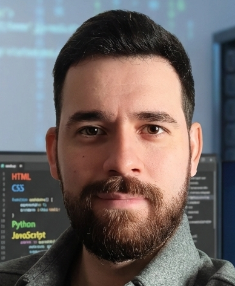

> Full-Stack Developer
Desarrollador Full Stack con una sólida base técnica construida a través de proyectos personales y formación continua.
Responsable, organizado y enfocado en el detalle, con rápida adaptación a los cambios y buen trabajo en equipo.
Creación de diferentes APIs con diferentes lenguajes de programación.
Desarrollo páginas web como Frontend con Angular 19, React 18, HTML5, CSS3, JavaScript y Sass, Postman.
Creación y uso de base de datos con MongoDB. Entorno backend con Node.JS y Cypress.
Implementación de Github Actions y Git, control de versiones.
Trabajo en proyectos reales. Reuniones por Microsoft Teams
Técnico encargado de rótulos de los ponentes, Cronometraje de las ponencias con mensajes en pantalla y timing.
Control y monitorización de recursos usados en las ponencias.
Técnico encargado de programa de grabación y traducción simultánea para congreso de hidrógeno verde.
Encargado de configuración de IP, asignación de rangos IP y grupos de seguridad, logrando una conexión óptima.
[> EXECUTE: OPEN_CERTIFICATE_PDF]
Validation ID: 8016597078JL // Authenticity verified by Fortinet Training Institute.
> Índices de código fuente disponibles en servidor remoto:
API para medir la salud y buenas prácticas de repositorios de GitHub.
Sustituto de captcha mediante pulso humano del mouse sin datos biométricos.
> Módulos técnicos verificados de forma interna:
> Complete los parámetros de transmisión para enviar un mensaje directo al núcleo del sistema: